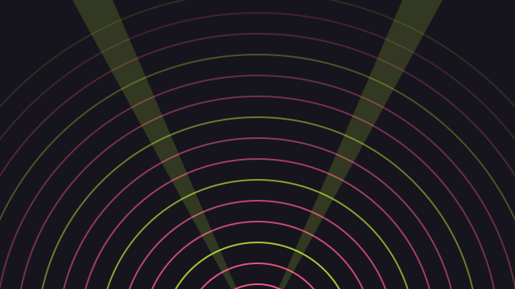

Prompt & Vision Hall
Capacity: 450Main Auditorium (DOX+ Hall)
Designed for keynotes, large-scale generative audiovisual performances, neural cinema screenings, and live robotic art.
- Meyer Sound Spatial Audio System
- Dual 4K Laser Projection Surfaces
- Stage Rigging for Live Kinetic Installations
- Step-free access & reserved seating